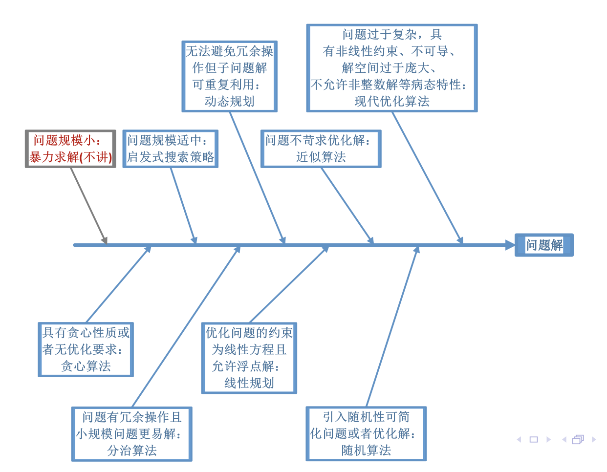

算法研究的意义
可计算性 -> 能行可计算性 -> 算法设计与分析(本课程) -> 编程语言实现 -> 软件系统集成
例：插入排序O(N^2)但是在小数组上性能很棒，归并排序方便并行，且可以与插入排序组合。
算法的定义
计算：可由给定的计算模型机械之行的计算步骤序列成为该模型下的一个计算。
算法（形式定义）：算法是满足下列特征的计算(given by Donald Knuth) *有三本书可以用来学算法
- 输入：必须有大于零的输入量。
- 输出：应当有一个或以上的输出作为计算的结果。
- 确定性：算法描述无歧义，每一步都是严格定义和确定的动作。
- 有穷性/终止性：通常要求算法有限步内必须停止。
- 可行性：每一个动作都能够被精确地机械执行。
通用计算模型：图灵机
由 有穷控制器 + 无限长的纸带 组成，有穷控制器可以通过左右移动的磁头读写纸带。现在计算机可执行的计算都可以由图灵机在有穷步完成。
所有的计算机都属于图灵机，也属于冯诺伊曼架构。
现代计算模型：RAM
Random Access Machine用于算法度量的一种，与实际机器无关的模型。RAM机的处理器是单线程处理器，指令完全按顺序执行，即不考虑并行操作。有以下特点：
- 每个基本操作（原子）需要1个时间单位（loop和subroutine不是基本操作）
- 每次存储器访问需要一个时间单位（不考虑内存溢出问题，也不考虑cache命中/miss时间）
- 解决给定的问题所需时间，由RAM机种操作的时间单位总和度量；所需的空间由RAM机占用的存储单元的数量来度量。
算法复杂性考量：空间 时间
算法问题的描述—形式语言
Input Output两个set，分别为问题R的输入集合和输出集合，问题可以定义为一个关系$R \subset I \times O$.
如排序问题sorting（形式定义）：
Input = {
Output = {
SORT = {…子集匹配}
虽然更数学，没有bias，但是形式定义不太直观描述。
算法描述方法—伪代码
- 不面向特定编程语言
- 简洁清晰为上，抛弃细节（关注重点，直击要害），可以使用自然语言描述一个可能复杂的问题
- 只关心流程的正确性，不关心编译，变量声明等
- 不关心软件工程问题，忽略数据抽象，模块性，错误处理
- 举例：Euclidean算法
算法设计
目的：
- 求解问题：得到问题的解，或者执行一流程操作
- 优化问题，从众多算法中找到最优（效率，解的优化程度）算法
学习思路：
- 一般到特殊：将常见算法进行分类总结，以宏观角度指导【未知】算法设计
- 特殊到特殊：学习不同领域的众多算法，类比地去解决
算法图谱：一般思考顺序

算法分析
- 算法 正确性分析
- 算法 复杂性分析
- 算法 实验分析
算法正确性
如果它对于每一个输入都最终停止并产生正确的输出结果。
/不正确的表现：
- 对所有或者部分输入不停止
- 对所有输入都停止，但是对部分输入产生错误输出
以上是确定性算法。
/随机算法特征：
- 对所有输入都停止
- 可能产生错误解，但是与输入不相关，且错误解的产生可控
/近似算法特征：
- 对所有输入停止
- 对所有输入产生近似解
算法正确性的证明方法：
！注意程序调试通过$\ne$算法正确！
- 证明算法对所有输入停止
- 证明算法对所有输入产生正确解
- 常用“归纳法”
循环不变式
即算法中循环所具有的性质，主要用来说明算法的正确性。（循环也是算法复杂的来源之一）
需要：（前两条正是数学归纳法）
- “初始化”：在循环第一次迭代前循环不变式为真
- ”保持“：如果循环的某次迭代前为真，下次迭代之前仍为真
- “终止”：循环中止时依然为真，且提供一个有助于证明算法正确性的性质。
举例：插入排序。1
2
3
4
5
6
7
8INSERTION-SORT(A)
for j = 2 to A.length
key = A[j]
i = j-1
while i>0 and A[i] > key
A[i+1] = A[i]
i = i-1
A[i+1] = key
算法复杂性
- 复杂度分析的目的：预测算法对不同规模输入所需要资源，为算法选择提供依据
- 复杂度分析的结果：所需资源随输入变化的函数
- 复杂度分析三个方面：
- 输入规模
- 时间复杂度
- 空间复杂度
- 主要研究在输入规模足够大的情况下的增长趋势（即渐进复杂度）。有以下的特性：
- 最坏复杂度
- 最好复杂度
- 平均复杂度
- 均摊复杂度
时间复杂度：对特定输入规模得到结果所需要原子操作的“步”数。
- 是输入规模的函数
- 暗含假定每一步的执行需要常数时间（相同）
- 完全不考虑算法之外的问题
空间复杂度：对特定输入规模得到结果所需要利用的存储空间的大小。
举例：插入排序的复杂度分析
- for循环，步长位移 (*注意终止条件位移也是耗时的)
- 赋值
- 加法，乘法
- 条件语句（按照最差:每次均进入 / 最好:每次均不进入情况计算最好/最坏复杂度）
- 注意每层循环内语句都要加一层累加$\sum$
- 平均复杂度（一般按照均匀分布选择条件语句执行与否）
一般算法的复杂度分析重点关注循环，找到循环层->阶数。
实验分析
- 确定实验目的
- 决定度量效率的标准和度量单位
- 准备测试样例
- 用程序实现待测算法
- 插入计数器等，运行算法并加载特定输入样例，记录实验数据
- 分析
度量标准：
- 操作次数
- 原子操作
- timer
- wallclock（程序外部测量，如手动计时或者系统UNIX的time命令）
- 程序开始和结束
- C/C++可以用clock()
- Java可以用System类的currentTimeMillis()方法
样例准备：
- 随机数生成
- 利用结果图分析
- 内推法 外推法